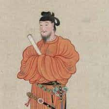
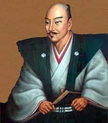
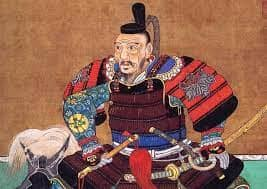
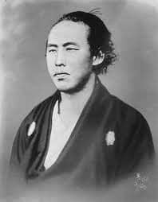
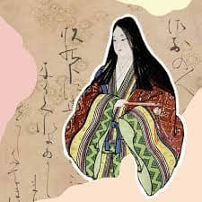

Príncipe Shōtoku, o Shōtoku Taishi, es una figura venerada en la historia y cultura japonesas, nacido en el año 574 d.C. Miembro destacado de la familia imperial durante el período Asuka, su reinado estuvo marcado por logros notables. Contribuyó significativamente al desarrollo del budismo en Japón y promulgó la Constitución de Diecisiete Artículos, basada en principios éticos budistas, abogando por la benevolencia y la justicia en el gobierno. También construyó el Templo Shitennoji en Osaka y apoyó la traducción de textos budistas del chino al japonés, desempeñando un papel crucial en la difusión de la religión en Japón. La expresión "tierra del sol naciente" se asocia comúnmente con Japón, aunque no está directamente relacionada con Shōtoku.
Oda Nobunaga, nacido en 1534, fue un destacado daimyo y señor de la guerra en el período Sengoku de Japón. Conocido como el "Rey Demonio de Japón", Nobunaga destacó por sus tácticas militares innovadoras, utilizando fusileros y estrategias astutas. Inició la unificación de Japón, promovió las artes y la cultura, pero su vida terminó trágicamente en 1582 cuando se vio obligado a cometer seppuku debido a la traición de Akechi Mitsuhide. Su legado perdura, sentando las bases para la unificación japonesa bajo Toyotomi Hideyoshi y Tokugawa Ieyasu.
Toyotomi Hideyoshi (1537-1598) fue un destacado líder militar y político en el período Sengoku de Japón, desempeñando un papel crucial en la unificación del país. Inicialmente un campesino, ascendió en las filas y se convirtió en uno de los tres unificadores de Japón junto con Oda Nobunaga y Tokugawa Ieyasu. Tras la muerte de Nobunaga en 1582, Hideyoshi consolidó el poder y completó la unificación en 1590, derrotando al último gran señor de la guerra, Hojo Ujimasa, en la campaña del Castillo de Odawara. Estableció un gobierno centralizado, promulgó leyes para pacificar el país y confiscó las armas de los campesinos con su política de "una espada por cada campo" para prevenir rebeliones. Inició la construcción del Castillo de Osaka como símbolo de autoridad, fomentó el comercio y la agricultura. A pesar de sus intentos fallidos de invadir China, su muerte en 1598 llevó a un período de inestabilidad, pero su legado perduró a través de su sucesor, Tokugawa Ieyasu, quien estableció el shogunato Tokugawa y un gobierno estable en Japón.
Sakamoto Ryōma (1836-1867) fue un destacado samurái durante la era Edo en Japón y una figura clave en la Restauración Meiji. Aunque provenía de una familia samurái en Tosa, desarrolló una perspectiva única y visionaria sobre la política y la modernización de Japón. Abogó por la abolición del sistema de clases, la apertura al mundo exterior y la modernización para hacer frente a las amenazas extranjeras. Ryōma buscó alianzas entre clanes rivales, logrando la creación de la alianza Satchō, que unió a los clanes Satsuma y Chōshū para derrocar al shogunato Tokugawa y restaurar al emperador al poder. Su vida fue truncada trágicamente en 1867 cuando fue asesinado, pero su legado perdura como símbolo de la lucha por la modernización y la transición hacia la era Meiji en Japón.
Murasaki Shikibu (alrededor del año 973 - siglo XI) fue una destacada escritora japonesa, conocida por su obra maestra "Genji Monogatari" (El cuento de Genji). Vivió en la corte de Heian, una época de refinada cultura aristocrática en Japón. Como dama de la corte, desafió las normas de escritura predominantemente masculinas. "El cuento de Genji", escrito en japonés clásico, es considerada la primera novela de la historia y aborda la vida y amores del príncipe Hikaru Genji, explorando temas como el amor, la naturaleza humana y la vida en la corte imperial. Murasaki Shikibu dejó un legado duradero, influyendo en la literatura japonesa con personajes complejos y prosa poética. Su obra también ofrece una visión única de la vida en la corte imperial de Heian y la posición de las mujeres en la sociedad de la época. Aunque su identidad real es en gran parte un misterio, su contribución a la literatura y la cultura japonesas ha sido reconocida a nivel internacional.
